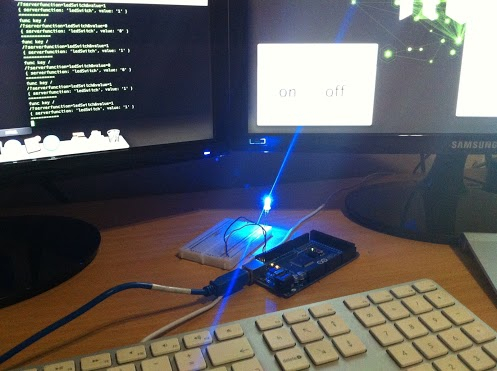
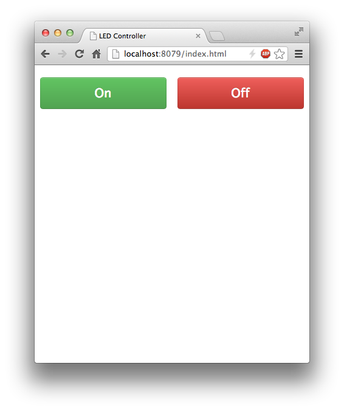

Controlling an LED on an Arduino over HTTP
JavaScript Meets Hardware
2013-02-05 Updated 2025-12-31 · 1f8c246Prerequisites
- Node.js and npm installed with some knowledge of Node
- Arduino IDE installed on your machine
- Knowledge of getting an LED working on pin 13 of an Arduino
Setting Up the Arduino
Wire an LED to pin 13 on the Arduino and plug the Arduino into your development machine. Then follow the instructions on the johnny-five readme to get your Arduino ready for communication.

Setting Up the Project
Create a folder for your project and create two files in it, server.js and index.html.
Copy the code from the gist into the respective files and run the following commands in the project folder to install the dependencies:
npm install narf johnny-five
Now run your server:
node server.js
And browse to http://localhost:8079/index.html

If you wish to control the light from another machine you will have to edit the urls in index.html and replace localhost with the IP address of the server.
How It Works
The code is quite simple, I suggest reading through it along with the johnny-five documentation to get a better understanding of what is going on.
Originally posted on Blogspot